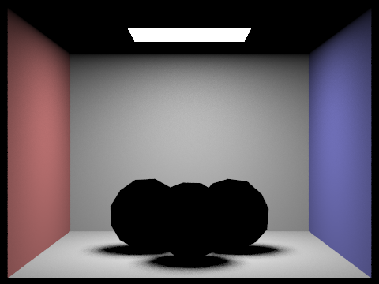

CS184/284A Spring 2025 Homework 3 Write-Up
- Link to webpage: https://cal-cs184-student.github.io/hw-webpages-quaternion/hw3/index.html
- Link to GitHub repository: https://github.com/cal-cs184-student/sp25-hw3-raycast

Overview
In this project we go over ray generation from Image Space to Camera Space. We also gover over how intersection works for basic primitives. We go over how we can construct a BVH structure and increase intersection performance. We go over direct illumination and general illumination through various techniques such as uniform hemisphere sampling and direct sampling We also do adaptive samplingPart 1: Ray Generation and Scene Intersection
Ray Generation Walkthrough. So let's say we want to generate an image with ray casting, such as the above?
How do we come up with the individual pixels in this image?
Let's take this 2D image that we want to generate and call it the Image Space.
It stores normalized coordinates of the pixels \((x, y) \in \mathcal{R}^2, x, y \in [0, 1] \).
With these coordinates, we can generate a ray casting(s) for each \((x,y)\) pixel coordinate.
To do this we convert to Camera Space.
Essentially, in 3D space, we place our "camera" at the origin and the screen at \(z=-1\) with dimension described by `hFov` and `vFov`,
which describes the field of view of the camera in degrees.
Intuitively, it's like placing a window in front of you in space (with rays casting towards your retinas).
The math to convert the 2D Image Space to Camera Space is pretty simple trigonometry:
\[
x' = (2x - 1) * \tan{(hFov / 2)}\\
y' = (2y - 1) * \tan{(vFov / 2)}\\
z' = -1
\]
Where the \(\tan(vFov/2)...\) derived from simple trigonometry: we take half the angle of the field of view (corresponding to the angle between line of sight and one of the screen edges) and take the tangent of that angle.
Now if we were to only cast 1 ray per 1 pixel, we'd get pretty poor results.
It would look very grainy.
Introduce our averaging sampling where we cast a set of rays for each pixel and average them.
In our implementation here, for each indexed pixel \((i, j)\), we can do the following for N times:
- We create a random sample \((d_x,d_y) \in \mathcal{R}^2, d_x, d_y \in [0, 1]\) and add it to the indexed value \((i, j)\) of each pixel in the image.
- This gives us a normalized coordinate in Image Space \( (x, y) = \left(\frac{i + d_x}{\text{width}}, \frac{j + d_y}{\text{height}} \right)\). In other words, a randomly sampled point inside that pixel we are sampling for.
- Cast a ray from the camera origin towards this normalized coordinate in Camera Space. Collect the radiance.
Triangle Primitive Intersection Walkthrough. Our meshes are made out of triangles, so we need to be able to detect these surfaces with our rays. Essentially, we cast a ray out (in one of the samples described above) and then try to detect if we've hit a triangle. The object can tell us material properties and such described in later parts, but we essentially receive a radiance vector describing the RGB components when an mesh is hit.
Triangle intersection algorithm
Say we have some triangle primitives in the World Space. How do we test if our rays are intersecting it?
First we can test if the ray intersects the plane the triangle is one (guaranteed).
As we've seen before, the analytic solution is pretty simple. Solve the set of equations.
\[
\begin{cases}
\textbf{o} + t \textbf{d} = \textbf{p}\\
(\textbf{p} - \textbf{p'}) \cdot \textbf{N} = 0
\end{cases}\\
t = \frac{(p' - o) \cdot N}{d \cdot N}
\]
Hurray, we've found a value \(t\) that describes a position \(p\) on the plane the triangle is on.
Most importantly, when an intersection is found, we update that ray's ray.max_t = t so that only primitives that are closer can further detected.
Second, since we've found the position on the plane this ray intersects, we can solve whether the point is within the triangle using barycentric coordinates described in previous lectures/homeworks.
Now we are using some shortcuts, but essentially if \( \alpha < 0, \beta < 0, \alpha + \beta > 1 \) we know this point is outside the triangle.
Sphere Primitive Intersection Walkthrough. How do we test for a ray-sphere intersection? The analytic solution is fairly simple. We can essentially simplify the two equations: \[ \begin{cases} \textbf{o} + t \textbf{d} = \textbf{p}\\ (\textbf{p} - \textbf{c})^2 = R^2, \quad \text{ where } \textbf{c} \text{ is sphere center} \end{cases}\\ \] Solve for \(t\) with good old algebra (careful with the dot products) and we get: \[ t = \frac{-b \pm \sqrt{b^2 - 4ac}}{2a}\\ \begin{cases} a = \textbf{d} \cdot \textbf{d}\\ b = 2(\textbf{o} - \textbf{c}) \cdot \textbf{d} \\ c = (\textbf{o} - \textbf{c}) \cdot (\textbf{o} - \textbf{c}) - R^2 \end{cases} \]
ray.max_t = t so that only primitives that are closer can further detected.

|
|
Part 2: Bounding Volume Hierarchy
BVH algorithm walkthrough
The Bound Volume Hierarchy reduces the amount of computation required to detect intersections with objects in world space.
We do this by splitting up the rectangular space in halves, until a terminating point.
When we recursively divide the space, we are creating a binary tree of boxes, where each box can contain 2 "sub-boxes" or just a list of enclosed primitives.
When we do this, we are essentially grouping the space.
So when we cast a ray to find intersections with primitives,
we can test if it intersects with the overall enclosing box first to decide whether to eliminate traversing through this box.
In essence, pruning the binary tree of objects so that we don't need to expensively find intersections every primitive.
Bound box detection. The essence of the BVH construction is the use of pruning by box detection.
We can detect whether a ray intersects a enclosing box with relatively inexpensive calculations.
Specifically, for each axis we can simply test the following for the \(t\) value:
\[ t = \frac{L.x - o.x}{d.x} \text{ or } \frac{R.x - o.x}{d.x} \]
Where \(L, R \) are the opposing corners that describe the bounding box.
We do this for every axis of the box.
We minimize the further \( t\) value and maximize the closer \(t\) value on each axis.
This gives us a set of values tmin and tmax which tells us if there is an intersection.
If there isn't an intersection we'd have tmin > tmax or they are just out of bounds for our ray.
1st Heuristic.
We first tried a simple heuristic towards splitting our BVH tree.
Specifically, we chose the axis with the highest variance and split along the mean.
For example, with a collection of primitives with centroids \(\langle x_i, y_i, z_i \rangle\),
we calculate the mean \(\langle \mu_x, \mu_y, \mu_z \rangle \) and use that to find the variances \(\langle \sigma^2_x, \sigma^2_y, \sigma^2_z \rangle \)
then choose the axis (either x, y, z) that has the highest \(\sigma^2\).
With that axis, we split the primitives into two groups divided by that axis \( \mu_i \).
We can recursively create a new "sub-BVH" with these two groups.
For example, say for the group of centroid positions, we find the \( x\) axis with the most variance.
We group the primitives with an \( x\) value less than \( \mu_x \) and group other.
We use these two groups to recursively create a new BVH tree.
We terminate when the group length is small enough.
2nd Heuristic Improved memory and efficiency. Look at Part 6: Extra Credit for analysis...

|
|
Rendering Times. We've seen dramatic improvements with the BVH structure. Large meshes like the ones above can be executed in reasonable times. Here we have a comparison of "peter.dae" shown above on a 1vCPU, 2048 MB RAM Ubuntu machine using the 1st heuristic.
| nth trial | Rendering peter.dae Before BVH | Rendering peter.dae After BVH |
|---|---|---|
| 1 | 183s | 0.0388s |
Part 3: Direct Illumination
Now that we've found intersections described in the previous section, we'd like to find the radiance or light from that point. However, there is often light rays going everywhere. There is ambient lighting. There are multiple light sources. There can be light coming from an area instead of a point. There can be light bouncing off surfaces. How can I "sum" all this light and find a value for the light going to the camera?
Direct Lighting with Uniform Hemisphere Sampling. In this solution, we take a point of intersection and sample in a hemisphere above the surface. We shoot in a random direction \(w_j\) away from the surface and see the light coming in that direction \( L_{in}(w_j) \). Intuitively, it's like shooting in the dark to see if there are any light sources and the corresponding radiances. Then averaging the values. \[ L_{out} = \frac{1}{N} \sum_j \frac{f_r(w_j \rightarrow w_r) L_{in}(w_j) \cos\theta_j}{p(w_j)}\\ = \frac{1}{N} \sum_j \frac{f_r(w_j \rightarrow w_r) L_{in}(w_j) w_j \cdot \hat{n}}{p(w_j)} \] Intuitively, \(f_r \) demonstrates the material properties and the reflectance off the surface. \(L_{in} \) is the light coming in given a randomly sampled direction \( w_j \). Notice that \(w_j \cdot \hat{n} \) gives us a "shadow" effect where light directly on a surface is brighter than light coming at an angle. \( p(w_j)\) is just probability to generate that sample.
|

|
Direct Lighting by Importance Sampling Lights. Similar to the hemisphere, except we sample each light. If it's a point source, we only really need to sample once. If it's an area of light, we can sample over that area towards the point of intersection. As long as it is not going behind a surface area, we can continue. As long as there are no intermediate intersections (objects in the way), we can add that to our \(L_{out}\) (average radiance towards camera). \[ L_{out} = \frac{1}{N} \sum_j \frac{f_r(w_j \rightarrow w_r) L_{in}(w_j) \cos\theta_j}{p(w_j)}\\ \] Here, \(p(w_j) \) is now a changing function as we don't sample \(w_j \) uniformly.
|
|
Comparison analysis..
Both represent ways to capture the light reflected off a surface when given many different points of incoming light.
Sampling uniformly over a hemisphere is a naive approach. It can be useful when there's lots of ambient lighting or light is just coming from many many different directions.
It is a bit like "shooting in the dark" and can require more samples to achieve a smoother result.
It can sometimes introduce graininess or inconsistencies if there are only a few (and small) light sources.
However, importance sampling comes in handy as it is more direct in where it should sample.
Specifically, it'll sample light sources directly, which can give more refined results.
This can sometimes mean there are less samples required.
However, it does require us to use an expensive intersect(...) which is a certain trade off.
This method can work very well if there are say a few point sources or small light sources.
Comparing noise levels In these pictures, we compare the noise level when we vary the number of light rays we sample for each ray. Here we use, samples per pixel = 1, bounces per primary pixel = 1.
|
|
|
|
|
|
Part 4: Global Illumination
To begin, we start sampling for the incoming ray as well, so we use the Monte Carlo method to sample the hemisphere around the point of intersection for incoming rays (as ray-tracing works in reverse, from the process our eyes use to see), including its corresponding probability density function coefficients; we return the outgoing ray, reassign the incoming ray and probability density coefficient (pointers is provided).In this part, as we switch from direct to global illumination, we need to consider the effects of indirect lighting. For this, we first calculate the first bounce, and then recursively call our ray bounce function till we run out of ray bounces by hitting the max depth limit (which is setup as a property of the pathtracer). To do this, we first add contribution of direct lighting (zero-bounce), then accumulate radiance along the ray as we trace it back; once we finally hit maximum recursion depth, we pop back out and add the radiance to the final global illumination result. In our implementation, we have an option where it doesn't accumulate ray bounces, so you can see the radiance contributed by each stage of bounces. This is a rendering of WALL-E!

We can also see the effects of changing the max_ray_depth parameter on the final image. Here are some examples of the bunny with different max_ray_depth values:
| max_ray_depth | Image |
|---|---|
| 0 |  |
| 1 |  |
| 2 |  |
| 3 |  |
| 4 |  |
| 5 |  |
| max_ray_depth (with Russian roulette) | Image |
|---|---|
| 0 | |
| 1 | |
| 2 | |
| 3 | |
| 4 | |
| 100 |  |
Part 5: Adaptive Sampling
Adaptive sampling walkthrough.
Every time we render a pixel, we make a certain number of samples.
Some pixels, however, don't require as many samples as others.
Intuitively, rendering a flat color surface doesn't require as many samples as the intricacies of someone's face.
In math terms, pixels samples with high variance require more samples than pixel samples with low variance.
Using this principle, we have adaptive sampling which is where we adjust the number of samples for each pixels
according to the variance of the values we get as we are sampling them.
In adaptive sampling, we have batches of ray samples executed in the following loop. For each batch:
- Create a subpixel coordinate in Image Space and convert it to Camera Space
- Ray cast this coordinate and attain the radiance (from previous parts).
- Calculate the mean and variance and number of samples so far after this batch.
- Leave if samples converge with the following \( 1.96 * \sigma / \sqrt{n} \leq \text{tolerance} \cdot \mu \)
|
|

|
|
|
|
(Optional) Part 6: Extra Credit Opportunities
More efficient construction and intersection routines for the BVH, more memory efficient BVH.
Here we have a comparison of "peter.dae" shown above on a 1vCPU, 2048 MB RAM Ubuntu machine using the 2nd heuristic.
| Rendering peter.dae After BVH |
|---|
| 0.0016s |
Vector3D mean = Vector3D(0, 0, 0);
for (auto p = start; p != end; p++) {
BBox bb = (*p)->get_bbox();
root.expand(bb);
mean += bb.centroid();
}
mean /= (end - start);
// maybe not the best implementation of splitting
Vector3D var = Vector3D(0.0);
for (auto p = start; p != end; p++) {
Vector3D v_i = (*p)->get_bbox().centroid() - mean;
var += v_i * v_i;
}
var /= (end - start);
BVHNode *node = new BVHNode(root);
if (end - start <= max_leaf_size) {
node->start = start;
node->end = end;
return node;
}
// split along axis of highest variance
int axis = 0;
double max_elem = -1.0f;
for (int i = 0; i < 3; i++) {
if (var[i] > max_elem) {
max_elem = var[i];
axis = i;
}
}
vector* left = new vector();
vector* right = new vector();
for (auto p = start; p != end; p++) {
Vector3D m = (*p)->get_bbox().centroid();
if (m[axis] < mean[axis]) {
left->push_back(*p);
} else {
right->push_back(*p);
}
}
node->l = construct_bvh(left->begin(), left->end(), max_leaf_size);
node->r = construct_bvh(right->begin(), right->end(), max_leaf_size);